<!DOCTYPE html PUBLIC "-//W3C//DTD XHTML 1.0 Transitional//EN" "http://www.w3.org/TR/xhtml1/DTD/xhtml1-transitional.dtd">
<html xmlns="http://www.w3.org/1999/xhtml">
<head>
<meta name="generator" content="NanoBlogger 3.1" />
<meta name="robots" content="all" />
<meta name="revisit-after" content="31 days" />
<meta http-equiv="Content-Type" content="text/html; charset=iso-8859-1" />

<title>Kurt's Weblog: June 2010 Archives</title>

<link rel="stylesheet" href="../styles/nb_default.css" type="text/css" />
<link rel="shortcut icon" href="../images/favicon.ico" />
<link rel="alternate" type="application/rss+xml" title="RSS 2.0" href="../rss.xml" />
<link rel="alternate" type="application/rss+xml" title="RSS 1.0" href="../index.xml" />
<link rel="alternate" type="application/atom+xml" title="Atom 0.3" href="../atom.xml" />

</head>

<body>

<div id="banner">
<h1><a href="../index.html" accesskey="1">Kurt's Weblog</a></h1>
<span class="description">electronic work log</span>
</div>

<div id="content">

<div class="blog">
<div id="menu">
	<a href="../index.html">Main</a>
</div>
</div>

<div class="blog">
<div class="item">
<a id="e2010-06-29T22_41_38.txt" name="e2010-06-29T22_41_38.txt"></a>
<h2 class="date">06.29.2010 22:41</h2>
<div class="blogbody">
<h3 class="title">Another form of Deepwater Horizon news</h3>
<div class="item-description">
Another way to see what is going on with the spill reponse beyond <a href="http://twitter.com/Oil_Spill_2010/">Oil Spill 2010</a> (twitter) and <a href="http://gomex.erma.noaa.gov/">ERMA</a>... put this code in browser:
<br /><br />
<pre><tt><b><font color="#0000FF">&lt;iframe</font></b>
<font color="#009900">src</font><font color="#990000">=</font><font color="#FF0000">"http://www.deepwaterhorizonresponse.com/go/doc/2931/676519/"</font>
<font color="#009900">mce_src</font><font color="#990000">=</font><font color="#FF0000">"http://www.deepwaterhorizonresponse.com/go/doc/2931/676519/"</font>
<font color="#009900">style</font><font color="#990000">=</font><font color="#FF0000">"border: medium none; overflow: hidden; width: 230px; height: 500px;"</font>
<font color="#009900">allowtransparency</font><font color="#990000">=</font><font color="#FF0000">"true"</font>
<font color="#009900">frameborder</font><font color="#990000">=</font><font color="#FF0000">"0"</font> <font color="#009900">scrolling</font><font color="#990000">=</font><font color="#FF0000">"no"</font>/<b><font color="#0000FF">&gt;</font></b></tt></pre>
<br /><br />
<b>Update 2010-12:</b> I should know better and include a screen shot.  This no longer works.  I should expect no less when the URL is "http://www.deepwaterhorizonresponse.com/go/doc/2931/676103/".  This now forwards to <a href="http://www.restorethegulf.gov/">http://www.restorethegulf.gov/</a>.  Now info about the widget appears here: <a href="http://www.dhs.gov/files/programs/gc_1273359122688.shtm">Gulf Coast Oil Spill Response - Here are a few sample widget placements with their accompanying HTML code</a> at DHS.gov.  But that doesn't work either.
<br /><br />
You will see this:
<br /><br />
<iframe src="http://www.deepwaterhorizonresponse.com/go/doc/2931/676519/" mce_src="http://www.deepwaterhorizonresponse.com/go/doc/2931/676519/" style="border: medium none; overflow: hidden; width: 230px; height: 500px;" allowtransparency="true" frameborder="0" scrolling="no"></iframe>
<br /><br />
From: <a href="http://www.deepwaterhorizonresponse.com/go/doc/2931/676103/">Get the Deepwater Horizon Response Widget</a> [deepwaterhorizonresponse.com]
</div>
</div>

<div class="posted">
<br />Posted by <span class="item-creator">Kurt</span>
| <a class="link" href="2010-06.html#e2010-06-29T22_41_38.txt">Permalink</a>

<!-- <br /><a href="archives/2010-07-01T11_10_43.html#comments">Comments</a> -->
</div>
</div>
<div class="item">
<a id="e2010-06-29T18_39_26.txt" name="e2010-06-29T18_39_26.txt"></a>
<h2 class="date">06.29.2010 18:39</h2>
<div class="blogbody">
<h3 class="title">BAGs in the EarthNC ChartViewer</h3>
<div class="item-description">
Last week, Virgil released the next version of his EarthNC
ChartViewer.  This new version includes NOAA survey BAGs if you turn
on the layer.  I haven't setup a way to get more than a few geotiffs
out, so the coverage is a bit spotty - that's my fault, not Virgil's.
<br /><br />
To show off one area where Monica and I were just yesterday for a
wedding, here is the NY/NJ area with the Statue of Libery.
<br /><br />
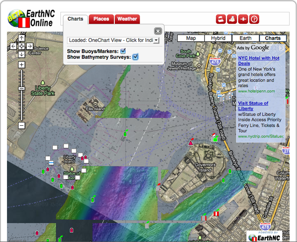
<br /><br />
This version has both a <a href="http://earthnc.com/chartviewer/#?ll=40.68883887356412,-74.03240203857422&z=14&chart=onechart">share link</a> and an embedding capability built right in:
<br /><br />
<iframe src="http://earthnc.com/chartviewer/#?em=1&ll=40.68883887356412,-74.03240203857422&z=14&chart=onechart" width="100%" height="600px"></iframe>
<br /><br />
This kind of reuse is only going to get better as we work through the
issues of how best to get these data products out to the world.
</div>
</div>

<div class="posted">
<br />Posted by <span class="item-creator">Kurt</span>
| <a class="link" href="2010-06.html#e2010-06-29T18_39_26.txt">Permalink</a>

<!-- <br /><a href="archives/2010-06-29T22_41_38.html#comments">Comments</a> -->
</div>
</div>
<div class="item">
<a id="e2010-06-29T17_41_30.txt" name="e2010-06-29T17_41_30.txt"></a>
<h2 class="date">06.29.2010 17:41</h2>
<div class="blogbody">
<h3 class="title">Simile Timeline of the Deepwater Horizon incident</h3>
<div class="item-description">
A good number of people have been wondering what they can do to help out
with the response to the Deepwater Horizon incident.  If you are a coder,
there is a lot you can do!
<br /><br />
For example, last month I posted an idea that nobody on the team has
time for: <a
href="../archives/2010-05.html#e2010-05-13T09_42_07.txt">Open
request for visualization</a>.  I was hoping someone would be able to
put together a <a
href="http://www.simile-widgets.org/timeline/">Simile Timeline</a> of
the incident.  <a href="http://geekdaily.org/">Jim Meyer</a> stepped
up an created this site!  Thanks Jim!!
<br /><br />
<a href="http://oilspillstats.com/">http://oilspillstats.com/</a>
<br /><br />
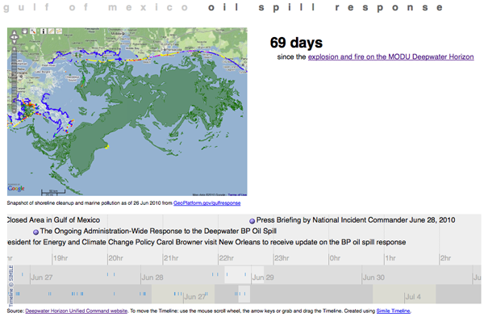
<br /><br />
Anyone working on mapserver, openlayers, gdal, postgis, jquery and
many other open source software packages is indirectly helping out
with the response and I greatly appreciate your contributions!
</div>
</div>

<div class="posted">
<br />Posted by <span class="item-creator">Kurt</span>
| <a class="link" href="2010-06.html#e2010-06-29T17_41_30.txt">Permalink</a>

<!-- <br /><a href="archives/2010-06-29T18_39_26.html#comments">Comments</a> -->
</div>
</div>
<div class="item">
<a id="e2010-06-29T10_13_02.txt" name="e2010-06-29T10_13_02.txt"></a>
<h2 class="date">06.29.2010 10:13</h2>
<div class="blogbody">
<h3 class="title">Larry Mayer on oil in the water column from the Deepwater Horizon</h3>
<div class="item-description">
The cruise report for Larry Mayer's work looking for midwater oil in the Gulf of Mexico is out:
<a href="http://www.noaa.gov/sciencemissions/PDFs/tj_deepwaterhorizon_responsemissionreport_june3_11_2010final.pdf">tj_deepwaterhorizon_responsemissionreport_june3_11_2010final.pdf</a>
<br /><br />
Larry was interviewed at CCOM by CNN: <a href="http://www.cnn.com/video/#/video/us/2010/06/26/pkg.snow.invisible.plumes.cnn?iref=allsearch">CNN video</a>
<br /><br />
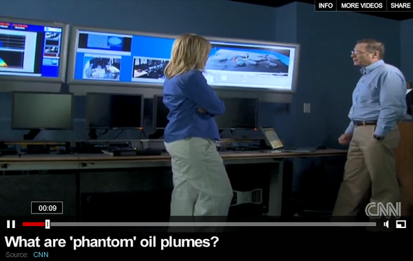
<br /><br />
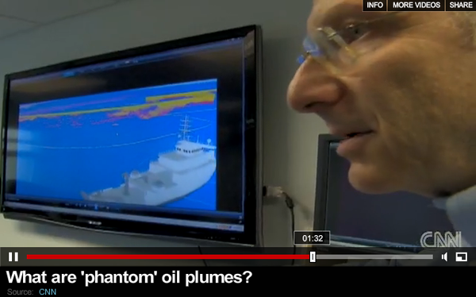
</div>
</div>

<div class="posted">
<br />Posted by <span class="item-creator">Kurt</span>
| <a class="link" href="2010-06.html#e2010-06-29T10_13_02.txt">Permalink</a>

<!-- <br /><a href="archives/2010-06-29T17_41_30.html#comments">Comments</a> -->
</div>
</div>
<div class="item">
<a id="e2010-06-21T10_09_26.txt" name="e2010-06-21T10_09_26.txt"></a>
<h2 class="date">06.21.2010 10:09</h2>
<div class="blogbody">
<h3 class="title">Using hdf5 built in commands to examine a BAG</h3>
<div class="item-description">
BAGs are still a fairly new concept to me and in general to the
community, so I am in the mode where I am trying to figure out how to 
understand the files.  I haven't used HDF5 much before and am exploring
to understand and decode as many aspects of a BAG as possible.  HDF5 comes
with a bunch of command line tools that can show you what is inside of a BAG.
The first tool is h5ls
<pre><b>h5ls some_bathy.bag</b>
BAG_root                 Group</pre>
But it's better do list a BAG out recursively ('-r') to see the entire
structure:
<pre><b>h5ls --recursive some_bathy.bag</b>
/                        Group
/BAG_root                Group
/BAG_root/elevation      Dataset {6077, 5692}
/BAG_root/metadata       Dataset {12484/Inf}
/BAG_root/tracking_list  Dataset {0/Inf}
/BAG_root/uncertainty    Dataset {6077, 5692}</pre>
I've tried to figure out a way to nicely print out the metadata, but so
far, I have not found a clean way to do it.  This command gets you part
of the way, but then you will have to reverse the encoding of the XML:
<pre><b>h5ls --string --simple -d some_bathy.bag/BAG_root/metadata | cut -f2 -d\" | tr -d '\n' &gt; yuck.xml</b>
<b>cat yuck.xml</b>
metadata                 Dataset {12484/Inf}    Data:<b><font color="#000080">&lt;?xml</font></b><font color="#009900">%20version</font><font color="#990000">=</font><font color="#FF0000">1.0%20encoding</font>=<font color="#009900">UTF</font>-<font color="#009900">8</font><b><font color="#000080">?&gt;</font></b>%0a<i><font color="#9A1900">&lt;!--%20BAG%20Metadata%20-%20Created%20with:%20-vSABER_</font></i>...
</pre>
Then it is time to try h5dump to see the structure of the data.
<pre><b>h5dump -H some_bathy.bag</b>
HDF5 <font color="#FF0000">"some_bathy.bag"</font> <font color="#FF0000">{</font>
GROUP <font color="#FF0000">"/"</font> <font color="#FF0000">{</font>
   GROUP <font color="#FF0000">"BAG_root"</font> <font color="#FF0000">{</font>
      ATTRIBUTE <font color="#FF0000">"Bag Version"</font> <font color="#FF0000">{</font>
         <font color="#008080">DATATYPE</font>  H5T_STRING <font color="#FF0000">{</font>
               STRSIZE <font color="#993399">32</font><font color="#990000">;</font>
               <font color="#008080">STRPAD</font> H5T_STR_NULLTERM<font color="#990000">;</font>
               <font color="#008080">CSET</font> H5T_CSET_ASCII<font color="#990000">;</font>
               <font color="#008080">CTYPE</font> H5T_C_S1<font color="#990000">;</font>
            <font color="#FF0000">}</font>
         DATASPACE  SCALAR
      <font color="#FF0000">}</font>
      DATASET <font color="#FF0000">"elevation"</font> <font color="#FF0000">{</font>
         <font color="#008080">DATATYPE</font>  H5T_IEEE_F32LE
         <font color="#008080">DATASPACE</font>  SIMPLE <font color="#FF0000">{</font> <font color="#990000">(</font> <font color="#993399">6077</font><font color="#990000">,</font> <font color="#993399">5692</font> <font color="#990000">)</font> <font color="#990000">/</font> <font color="#990000">(</font> <font color="#993399">6077</font><font color="#990000">,</font> <font color="#993399">5692</font> <font color="#990000">)</font> <font color="#FF0000">}</font>
         ATTRIBUTE <font color="#FF0000">"Maximum Elevation Value"</font> <font color="#FF0000">{</font>
            <font color="#008080">DATATYPE</font>  H5T_IEEE_F32LE
            DATASPACE  SCALAR
         <font color="#FF0000">}</font>
         ATTRIBUTE <font color="#FF0000">"Minimum Elevation Value"</font> <font color="#FF0000">{</font>
            <font color="#008080">DATATYPE</font>  H5T_IEEE_F32LE
            DATASPACE  SCALAR
         <font color="#FF0000">}</font>
      <font color="#FF0000">}</font>
      DATASET <font color="#FF0000">"metadata"</font> <font color="#FF0000">{</font>
         <font color="#008080">DATATYPE</font>  H5T_STRING <font color="#FF0000">{</font>
               STRSIZE <font color="#993399">1</font><font color="#990000">;</font>
               <font color="#008080">STRPAD</font> H5T_STR_NULLTERM<font color="#990000">;</font>
               <font color="#008080">CSET</font> H5T_CSET_ASCII<font color="#990000">;</font>
               <font color="#008080">CTYPE</font> H5T_C_S1<font color="#990000">;</font>
            <font color="#FF0000">}</font>
         <font color="#008080">DATASPACE</font>  SIMPLE <font color="#FF0000">{</font> <font color="#990000">(</font> <font color="#993399">12484</font> <font color="#990000">)</font> <font color="#990000">/</font> <font color="#990000">(</font> H5S_UNLIMITED <font color="#990000">)</font> <font color="#FF0000">}</font>
      <font color="#FF0000">}</font>
      DATASET <font color="#FF0000">"tracking_list"</font> <font color="#FF0000">{</font>
         <font color="#008080">DATATYPE</font>  H5T_COMPOUND <font color="#FF0000">{</font>
            H5T_STD_U32LE <font color="#FF0000">"row"</font><font color="#990000">;</font>
            H5T_STD_U32LE <font color="#FF0000">"col"</font><font color="#990000">;</font>
            H5T_IEEE_F32LE <font color="#FF0000">"depth"</font><font color="#990000">;</font>
            H5T_IEEE_F32LE <font color="#FF0000">"uncertainty"</font><font color="#990000">;</font>
            H5T_STD_U8LE <font color="#FF0000">"track_code"</font><font color="#990000">;</font>
            H5T_STD_I16LE <font color="#FF0000">"list_series"</font><font color="#990000">;</font>
         <font color="#FF0000">}</font>
         <font color="#008080">DATASPACE</font>  SIMPLE <font color="#FF0000">{</font> <font color="#990000">(</font> <font color="#993399">0</font> <font color="#990000">)</font> <font color="#990000">/</font> <font color="#990000">(</font> H5S_UNLIMITED <font color="#990000">)</font> <font color="#FF0000">}</font>
         ATTRIBUTE <font color="#FF0000">"Tracking List Length"</font> <font color="#FF0000">{</font>
            <font color="#008080">DATATYPE</font>  H5T_STD_U32LE
            DATASPACE  SCALAR
         <font color="#FF0000">}</font>
      <font color="#FF0000">}</font>
      DATASET <font color="#FF0000">"uncertainty"</font> <font color="#FF0000">{</font>
         <font color="#008080">DATATYPE</font>  H5T_IEEE_F32LE
         <font color="#008080">DATASPACE</font>  SIMPLE <font color="#FF0000">{</font> <font color="#990000">(</font> <font color="#993399">6077</font><font color="#990000">,</font> <font color="#993399">5692</font> <font color="#990000">)</font> <font color="#990000">/</font> <font color="#990000">(</font> <font color="#993399">6077</font><font color="#990000">,</font> <font color="#993399">5692</font> <font color="#990000">)</font> <font color="#FF0000">}</font>
         ATTRIBUTE <font color="#FF0000">"Maximum Uncertainty Value"</font> <font color="#FF0000">{</font>
            <font color="#008080">DATATYPE</font>  H5T_IEEE_F32LE
            DATASPACE  SCALAR
         <font color="#FF0000">}</font>
         ATTRIBUTE <font color="#FF0000">"Minimum Uncertainty Value"</font> <font color="#FF0000">{</font>
            <font color="#008080">DATATYPE</font>  H5T_IEEE_F32LE
            DATASPACE  SCALAR
         <font color="#FF0000">}</font>
      <font color="#FF0000">}</font>
   <font color="#FF0000">}</font>
<font color="#FF0000">}</font>
<font color="#FF0000">}</font>
</tt></pre>
</div>
</div>

<div class="posted">
<br />Posted by <span class="item-creator">Kurt</span>
| <a class="link" href="2010-06.html#e2010-06-21T10_09_26.txt">Permalink</a>

<!-- <br /><a href="archives/2010-06-29T10_13_02.html#comments">Comments</a> -->
</div>
</div>
<div class="item">
<a id="e2010-06-17T10_35_25.txt" name="e2010-06-17T10_35_25.txt"></a>
<h2 class="date">06.17.2010 10:35</h2>
<div class="blogbody">
<h3 class="title">SNMP monitoring on a Mac</h3>
<div class="item-description">
This blog post mainly comes from help given by Jordan.  I am a
beginner at using the <a
href="http://en.wikipedia.org/wiki/Simple_Network_Management_Protocol">Simple
Network Management Protocol (SNMP)</a>.  We are looking to use SNMP to
drive <a href="http://www.nagios.org/">Nagios</a> monitoring of our
AIS infrastructure.  The idea is to query snmp and have it give you
the status of the AIS feed by returning the number of ships heard on
the feed in the last 10 minutes.  Because this feed covers a large
region, this should work pretty well.  If this were for Great and
Little Bays in NH, where we sometime have no ships with AIS, then Nagios
would think that the AIS system was always down.  This example is done on
a Mac running 10.6 (also tested on 10.5 Server).  Linux systems may be
slightly different.  This is using the less secure snmp version 2 protocol.
<pre>cd /etc/snmp</pre>
Edit snmpd.conf, create the users in the com2sec section and comment
out the original entries.  Forgetting to comment out the default entries
will cause the daemon to start but be non-functional.
<pre>#com2sec local     localhost       COMMUNITY
#com2sec mynetwork NETWORK/24      COMMUNITY
com2sec ais       localhost       aiscom
com2sec ais2      nagiosserver.unh.edu ais2com</pre>
Now that you have two user/communities defined, we need to create the groups and tell
snmpd which version of the snmp protocol to listen to.
<pre>#             	sec.model  sec.name
#group MyRWGroup	v1         local
#group MyRWGroup	v2c        local
#group MyRWGroup	usm        local
#group MyROGroup v1         mynetwork
#group MyROGroup v2c        mynetwork
#group MyROGroup usm        mynetwork
<!-- -->
group AisGroup v2c         ais
group AisGroup v2c         ais2</pre>
I left the views alone.  Then I created the access for the group.
<pre>#                context sec.model sec.level match  read   write  notif
#access MyROGroup ""      any       noauth    exact  all    none   none
#access MyRWGroup ""      any       noauth    exact  all    all    none
<!-- -->
access AisGroup ""       v2c       noauth    exact  all    none   none</pre>
I then went through several iterations of starting snmpd and
discovered complaints in /var/log/snmpd.log.  These probably could have been
left in, but I always think it is better to get rid of all warnings.  Here 
are the things I had to comment out:
<pre># proc httpd
# exec echotest /bin/echo hello world
# exec web_status /usr/sbin/serveradmin status web
# exec wo_status /usr/sbin/serveradmin status webobjects</pre>
Then I started snmpd.  The -A prevents it from overwriting the snmpd.log and the -c explicitly
says which config file to use.
<pre><b>sudo /usr/sbin/snmpd -A -c /etc/snmp/snmpd.conf</b></pre>
Once snmpd is running, you can send it a SIGHUP (kill -1) to cause it to reload
its config files or you can kill it with a SIGQUIT (kill -3).  
<br /><br />
Now that the snmpd daemon is running, we need to test it:
<pre><b>snmpwalk -c aiscom -v 2c localhost</b>
snmpwalk -c aiscomm -v 2c localhost
SNMPv2-MIB::sysDescr.0 = STRING: Darwin snipe.ccom.nh 10.4.0 Darwin Kernel Version 10.4.0: Fri Apr 23 18:28:53 PDT 2010; root:xnu-1504.7.4~1/RELEASE_I386 i386
SNMPv2-MIB::sysObjectID.0 = OID: NET-SNMP-MIB::netSnmpAgentOIDs.255
DISMAN-EVENT-MIB::sysUpTimeInstance = Timeticks: (6675) 0:01:06.75
SNMPv2-MIB::sysContact.0 = STRING: Administrator <postmaster@example.com>
SNMPv2-MIB::sysName.0 = STRING: snipe.ccom.nh
SNMPv2-MIB::sysLocation.0 = STRING: Right here, right now.
SNMPv2-MIB::sysServices.0 = INTEGER: 76
SNMPv2-MIB::sysORLastChange.0 = Timeticks: (7) 0:00:00.07
SNMPv2-MIB::sysORID.1 = OID: SNMP-FRAMEWORK-MIB::snmpFrameworkMIBCompliance
SNMPv2-MIB::sysORID.2 = OID: SNMP-MPD-MIB::snmpMPDCompliance
...
HOST-RESOURCES-MIB::hrSWRunPerfMem.39056 = INTEGER: 22028 KBytes
HOST-RESOURCES-MIB::hrSWRunPerfMem.39059 = INTEGER: 4492 KBytes
HOST-RESOURCES-MIB::hrSWRunPerfMem.39070 = INTEGER: 1408 KBytes
HOST-RESOURCES-MIB::hrSWRunPerfMem.39071 = INTEGER: 1084 KBytes
Timeout: No Response from localhost</pre>
snmpwalk will only wait for so long to get data.  That is what is causing the timeout at the end.
To get a single value, try this:
<pre><b>snmpget -c aiscom -v 2c localhost hrSystemUptime.0</b>
HOST-RESOURCES-MIB::hrSystemUptime.0 = Timeticks: (8520654) 23:40:06.54</pre>
On debian linux systems, you can get the snmp tools by doing <b>sudo
apt-get install snmp</b>, while on RedHat/CentOS systems, do <b>sudo
yum install snmp-net</b>.
<br /><br />
At this point, we needed to call a script to inspect the database.  We
couldn't figure out how to call python directly, so we first have this
entry in /etc/snmp/snmpd.conf:
<pre>exec ais_pg_status /bin/bash /usr/local/bin/nagios_pg_ais.sh</pre>
That script is pretty simple:
<pre>#!/bin/bash
/sw/bin/python /usr/local/bin/nagios_pg_ais.py -u aisuser</pre>
The python code is not as flexible as we would like, but it basically prints the number of ships that have been seen in the last ten minutes.  I have a little issue with my timezones, so I have to query out into the future, but hopefully you get the idea.
<pre><tt><i><font color="#9A1900">#!/usr/bin/env python</font></i>
<b><font color="#000080">from</font></b> __future__ <b><font color="#000080">import</font></b> print_function
<b><font color="#000080">import</font></b> psycopg2
<b><font color="#000080">import</font></b> sys<font color="#990000">,</font> os
<!-- -->
<b><font color="#0000FF">def</font></b> <b><font color="#000000">get_parser</font></b><font color="#990000">():</font>
    <b><font color="#000080">from</font></b> optparse <b><font color="#000080">import</font></b> OptionParser
    parser <font color="#990000">=</font> <b><font color="#000000">OptionParser</font></b><font color="#990000">(</font>usage<font color="#990000">=</font><font color="#FF0000">"%prog [options] "</font><font color="#990000">,</font>version<font color="#990000">=</font><font color="#FF0000">"%prog "</font><font color="#990000">+</font>__version__<font color="#990000">)</font>
<!-- -->
    parser<font color="#990000">.</font><b><font color="#000000">add_option</font></b><font color="#990000">(</font><font color="#FF0000">'-d'</font><font color="#990000">,</font><font color="#FF0000">'--database-name'</font><font color="#990000">,</font>default<font color="#990000">=</font><font color="#FF0000">'realtime_ais'</font>
                      <font color="#990000">,</font>help<font color="#990000">=</font><font color="#FF0000">'Name of database within the postgres server [default: %default]'</font><font color="#990000">)</font>
    parser<font color="#990000">.</font><b><font color="#000000">add_option</font></b><font color="#990000">(</font><font color="#FF0000">'-D'</font><font color="#990000">,</font><font color="#FF0000">'--database-host'</font><font color="#990000">,</font>default<font color="#990000">=</font><font color="#FF0000">'localhost'</font>
                      <font color="#990000">,</font>help<font color="#990000">=</font><font color="#FF0000">'Host name of the computer serving the dbx [default: %default]'</font><font color="#990000">)</font>
    defaultUser <font color="#990000">=</font> os<font color="#990000">.</font><b><font color="#000000">getlogin</font></b><font color="#990000">()</font>
    parser<font color="#990000">.</font><b><font color="#000000">add_option</font></b><font color="#990000">(</font><font color="#FF0000">'-u'</font><font color="#990000">,</font><font color="#FF0000">'--database-user'</font><font color="#990000">,</font>default<font color="#990000">=</font>defaultUser
                      <font color="#990000">,</font>help<font color="#990000">=</font><font color="#FF0000">'Host name of the to access the database with [default: %default]'</font><font color="#990000">)</font>
    parser<font color="#990000">.</font><b><font color="#000000">add_option</font></b><font color="#990000">(</font><font color="#FF0000">'-p'</font><font color="#990000">,</font><font color="#FF0000">'--database-passwd'</font><font color="#990000">,</font>default<font color="#990000">=</font>None
                      <font color="#990000">,</font>help<font color="#990000">=</font><font color="#FF0000">'Password to access the database with [default: None]'</font><font color="#990000">)</font>
    parser<font color="#990000">.</font><b><font color="#000000">add_option</font></b><font color="#990000">(</font><font color="#FF0000">'-v'</font><font color="#990000">,</font><font color="#FF0000">'--verbose'</font><font color="#990000">,</font>default<font color="#990000">=</font>False<font color="#990000">,</font>action<font color="#990000">=</font><font color="#FF0000">'store_true'</font>
                      <font color="#990000">,</font>help<font color="#990000">=</font><font color="#FF0000">'Make program output more verbose info as it runs'</font><font color="#990000">)</font>
<!-- -->
    <b><font color="#0000FF">return</font></b> parser
<!-- -->
<b><font color="#0000FF">def</font></b> <b><font color="#000000">main</font></b><font color="#990000">():</font>
    <font color="#990000">(</font>options<font color="#990000">,</font>args<font color="#990000">)</font> <font color="#990000">=</font> <b><font color="#000000">get_parser</font></b><font color="#990000">().</font><b><font color="#000000">parse_args</font></b><font color="#990000">()</font>
    v <font color="#990000">=</font> options<font color="#990000">.</font>verbose
<!-- -->
    options_dict <font color="#990000">=</font> <b><font color="#000000">vars</font></b><font color="#990000">(</font>options<font color="#990000">)</font> <i><font color="#9A1900"># Turn options into a real dictionary</font></i>
    cx_str <font color="#990000">=</font> <font color="#FF0000">"dbname='{database_name}' user='{database_user}' host='{database_host}'"</font><font color="#990000">.</font><b><font color="#000000">format</font></b><font color="#990000">(**</font>options_dict<font color="#990000">)</font>
    <b><font color="#0000FF">if</font></b> v<font color="#990000">:</font> <b><font color="#0000FF">print</font></b> <font color="#990000">(</font><font color="#FF0000">'cx_str:'</font><font color="#990000">,</font>cx_str<font color="#990000">)</font>
    <b><font color="#0000FF">try</font></b><font color="#990000">:</font>
		cx <font color="#990000">=</font> psycopg2<font color="#990000">.</font><b><font color="#000000">connect</font></b><font color="#990000">(</font>cx_str<font color="#990000">)</font>
		cu <font color="#990000">=</font> cx<font color="#990000">.</font><b><font color="#000000">cursor</font></b><font color="#990000">()</font>
		cu<font color="#990000">.</font><b><font color="#000000">execute</font></b><font color="#990000">(</font><font color="#FF0000">"SELECT count(*) FROM vessel_pos WHERE time_stamp&gt;(now() + interval '3 hours 50 minutes');"</font><font color="#990000">)</font>
		row <font color="#990000">=</font> cu<font color="#990000">.</font><b><font color="#000000">fetchone</font></b><font color="#990000">()</font>
		count <font color="#990000">=</font> row<font color="#990000">[</font><font color="#993399">0</font><font color="#990000">]</font>
    <b><font color="#0000FF">except</font></b><font color="#990000">:</font>
		<b><font color="#0000FF">print</font></b> <font color="#990000">(</font><font color="#FF0000">'-1'</font><font color="#990000">)</font>
		sys<font color="#990000">.</font><b><font color="#000000">exit</font></b><font color="#990000">(</font><font color="#993399">3</font><font color="#990000">)</font>
        
    <b><font color="#0000FF">print</font></b> <font color="#990000">(</font><font color="#FF0000">'{count}'</font><font color="#990000">.</font><b><font color="#000000">format</font></b><font color="#990000">(</font>count<font color="#990000">=</font>count<font color="#990000">))</font>
    <b><font color="#0000FF">if</font></b> count <font color="#990000">&lt;</font> <font color="#993399">100</font><font color="#990000">:</font> sys<font color="#990000">.</font><b><font color="#000000">exit</font></b><font color="#990000">(</font><font color="#993399">0</font><font color="#990000">)</font>
    <b><font color="#0000FF">if</font></b> count <font color="#990000">&lt;</font> <font color="#993399">1000</font><font color="#990000">:</font> sys<font color="#990000">.</font><b><font color="#000000">exit</font></b><font color="#990000">(</font><font color="#993399">0</font><font color="#990000">)</font>
    sys<font color="#990000">.</font><b><font color="#000000">exit</font></b><font color="#990000">(</font><font color="#993399">0</font><font color="#990000">)</font>
<!-- -->
<b><font color="#0000FF">if</font></b> __name__ <font color="#990000">==</font> <font color="#FF0000">'__main__'</font><font color="#990000">:</font>
    <b><font color="#000000">main</font></b><font color="#990000">()</font></tt></pre>
We used a snmpwalk to find the location of the end point.  We can now query via snmp:
<pre><b>snmpget -c ais2com -v 2c aisserver.unh.edu .1.3.6.1.4.1.2021.8.1.101.1</b>
UCD-SNMP-MIB::extOutput.1 = STRING: 2961</pre>
The nagios entry in /etc/nagios/GROUP/services.cfg:
<pre>define service{
        host_name               server.unh.edu        service_description     AIS_FEED        check_command           get_snmp_oid!.1.3.6.1.4.1.2021.8.1.101.1!ais2com!1000:!100:!'new records in last 10 minutes'         max_check_attempts      5        normal_check_interval   10
        retry_check_interval    1
        check_period            24x7
        notification_interval   120
        notification_period     24x7
        notification_options    w,u,c,r,f,s
        contact_groups          ais
}</pre>
The check on the server now looks like this (with a ping and ssh check too):
<br /><br />
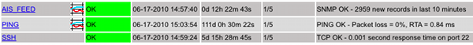
<br /><br />
Jordan has nagiosgrapher setup so now we have a nice view of vessels seen over time:
<br /><br />
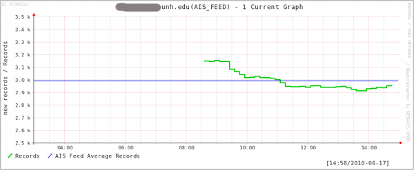
<br /><br />
Above, we started snmpd by hand.  Apple's methods for starting daemons
has been a moving target.  You can use fink's net-snmp-unified package
and daemonic:
<pre><b>daemonic dump | grep -i snmp</b>
<b>daemonic install net-snmp-unified</b></pre>
The current Apple way is:
<pre><b>sudo launchctl load -w /System/Library/LaunchDaemons/org.net-snmp.snmpd.plist</b></pre>
</div>
</div>

<div class="posted">
<br />Posted by <span class="item-creator">Kurt</span>
| <a class="link" href="2010-06.html#e2010-06-17T10_35_25.txt">Permalink</a>

<!-- <br /><a href="archives/2010-06-21T10_09_26.html#comments">Comments</a> -->
</div>
</div>
<div class="item">
<a id="e2010-06-15T17_09_39.txt" name="e2010-06-15T17_09_39.txt"></a>
<h2 class="date">06.15.2010 17:09</h2>
<div class="blogbody">
<h3 class="title">NOAA ship TJ leaving New Orleans</h3>
<div class="item-description">
Lots of familiar faces and an MVP.
<br /><br />
<object width="640" height="385"><param name="movie" value="http://www.youtube.com/v/r2tYRSD6ks4&hl=en_US&fs=1&color1=0x006699&color2=0x54abd6"></param><param name="allowFullScreen" value="true"></param><param name="allowscriptaccess" value="always"></param><embed src="http://www.youtube.com/v/r2tYRSD6ks4&hl=en_US&fs=1&color1=0x006699&color2=0x54abd6" type="application/x-shockwave-flash" allowscriptaccess="always" allowfullscreen="true" width="640" height="385"></embed></object>
</div>
</div>

<div class="posted">
<br />Posted by <span class="item-creator">Kurt</span>
| <a class="link" href="2010-06.html#e2010-06-15T17_09_39.txt">Permalink</a>

<!-- <br /><a href="archives/2010-06-17T10_35_25.html#comments">Comments</a> -->
</div>
</div>
<div class="item">
<a id="e2010-06-14T16_42_13.txt" name="e2010-06-14T16_42_13.txt"></a>
<h2 class="date">06.14.2010 16:42</h2>
<div class="blogbody">
<h3 class="title">AUV Bootcamp - Swains Lake</h3>
<div class="item-description">
This year, UDel brought the gavia and their team up to Swains Lake,
which is about 15 minutes from UNH.  This was the operations center:
<br /><br />
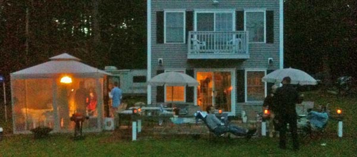
<br /><br />
There was some "classroom time"...
<br /><br />
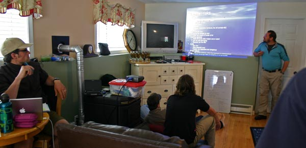
<br /><br />
Art and Val going over the upcoming mission concept:
<br /><br />
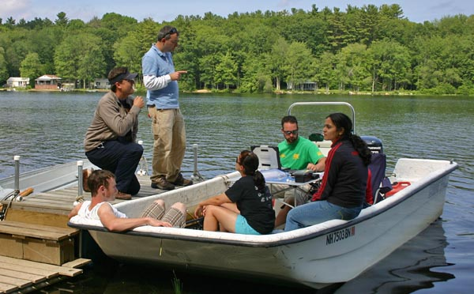
<br /><br />
This stuff makes planning difficult:
<br /><br />
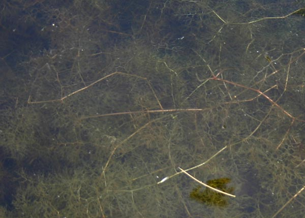
<br /><br />
The last night, the team went out for night time operations.  There
was planning in the bug tent.
<br /><br />
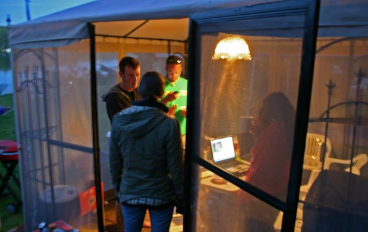
<br /><br />
And then the team headed out to the other end of the lake:
<br /><br />
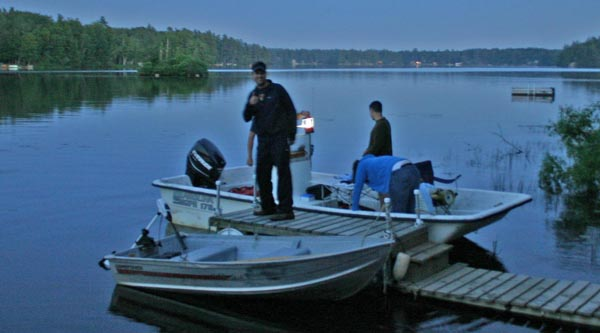
</div>
</div>

<div class="posted">
<br />Posted by <span class="item-creator">Kurt</span>
| <a class="link" href="2010-06.html#e2010-06-14T16_42_13.txt">Permalink</a>

<!-- <br /><a href="archives/2010-06-15T17_09_39.html#comments">Comments</a> -->
</div>
</div>
<div class="item">
<a id="e2010-06-14T15_03_54.txt" name="e2010-06-14T15_03_54.txt"></a>
<h2 class="date">06.14.2010 15:03</h2>
<div class="blogbody">
<h3 class="title">AIS and NCOM in the public version of ERMA</h3>
<div class="item-description">
Try2... now it is officially announced.  ERMA is publicly available.
Mapserver, OpenLayers, PostGIS, libais, gdal, OpenStreetMaps, lots of
software I have forgotten, and hard work by a dedicated team of
engineers and GIS people distributed across the country.  We are working
on the AIS vessel categories.
<br /><br />
<a href="http://www.noaanews.noaa.gov/stories2010/20100614_erma.html">Federal Agencies Introduce Online Mapping Tool to Track Gulf Response</a> [NOAANEWS]
<br /><br />
<a href="http://gomex.erma.noaa.gov/erma.html#x=-90.42000&y=28.03000&z=6&layers=267+3023+3582+3575+497+3392">ERMA with NAIS and NCOM layers turned on</a>
<br /><br />
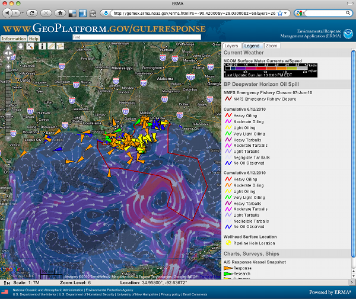
<br /><br />
Trackbacks:
<br /><br />
<a href="http://the-moni-blog.blogspot.com/2010/06/track-oil-spill-response-vessels-in.html">Track Oil Spill Response Vessels in Real-Time</a> [Moni-Blog]<br/>
<a href="http://gcaptain.com/maritime/blog/real-time-mapping-spill-response">Real Time Mapping of BP Oil Spill Response Vessels</a> [gCaptain.com]
</div>
</div>

<div class="posted">
<br />Posted by <span class="item-creator">Kurt</span>
| <a class="link" href="2010-06.html#e2010-06-14T15_03_54.txt">Permalink</a>

<!-- <br /><a href="archives/2010-06-14T16_42_13.html#comments">Comments</a> -->
</div>
</div>
<div class="item">
<a id="e2010-06-11T15_45_01.txt" name="e2010-06-11T15_45_01.txt"></a>
<h2 class="date">06.11.2010 15:45</h2>
<div class="blogbody">
<h3 class="title">AIS snapshot of the Gulf Response</h3>
<div class="item-description">
Content to return shortly...
Update 7:35PM EST: The site is now updating every 10 minutes.
<br /><br />
I can finally show what I've been working on for the Gulf Response.
The USCG and NOAA have made a snapshot of the response vessels as
captured from the USCG AIS feeds.  This is a small subset of the
vessels that are involved.  The URL encodes the view and what layers
are turned on.  Here is the well head and the vessels in the area.
<br /><br />
An example URL: <a href="http://gomex.erma.noaa.gov/erma.html#x=-88.36690&y=28.73056&z=11&layers=1613+1759+3023+3393+3327+3392+497">http://gomex.erma.noaa.gov/erma.html#x=-88.36690&y=28.73056&z=11&layers=1613+1759+3023+3393+3327+3392+497</a>
<br /><br />
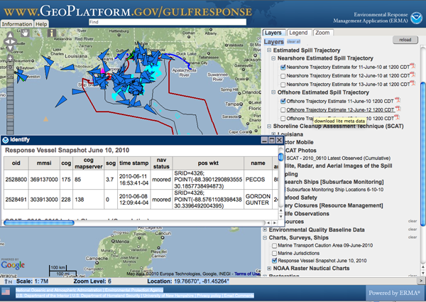
<br /><br />
I am processing the AIS NMEA strings with my <a href="http://vislab-ccom.unh.edu/~schwehr/software/libais/downloads/">libais</a> software to track where ships are.
</div>
</div>

<div class="posted">
<br />Posted by <span class="item-creator">Kurt</span>
| <a class="link" href="2010-06.html#e2010-06-11T15_45_01.txt">Permalink</a>

<!-- <br /><a href="archives/2010-06-14T15_03_54.html#comments">Comments</a> -->
</div>
</div>
<div class="item">
<a id="e2010-06-10T17_51_07.txt" name="e2010-06-10T17_51_07.txt"></a>
<h2 class="date">06.10.2010 17:51</h2>
<div class="blogbody">
<h3 class="title">AUV Bootcamp - wish I was there</h3>
<div class="item-description">
There is just too much going on.  I wish I was out with the crew at
AUV bootcamp, which is occuring this week not too far from UNH.
<br /><br />
Thanks to Monica for this image:
<br /><br />
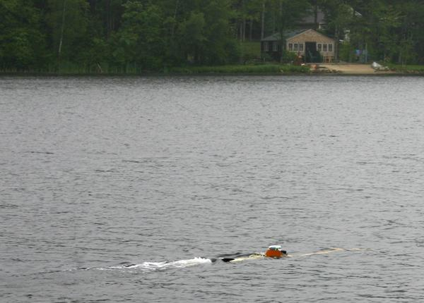
</div>
</div>

<div class="posted">
<br />Posted by <span class="item-creator">Kurt</span>
| <a class="link" href="2010-06.html#e2010-06-10T17_51_07.txt">Permalink</a>

<!-- <br /><a href="archives/2010-06-11T15_45_01.html#comments">Comments</a> -->
</div>
</div>
<div class="item">
<a id="e2010-06-08T21_29_56.txt" name="e2010-06-08T21_29_56.txt"></a>
<h2 class="date">06.08.2010 21:29</h2>
<div class="blogbody">
<h3 class="title">Deepwater Horizon overview graphic</h3>
<div class="item-description">
<a href="http://www.deepwaterhorizonresponse.com/go/doc/2931/598679/">fullsize image</a>
<br /><br />
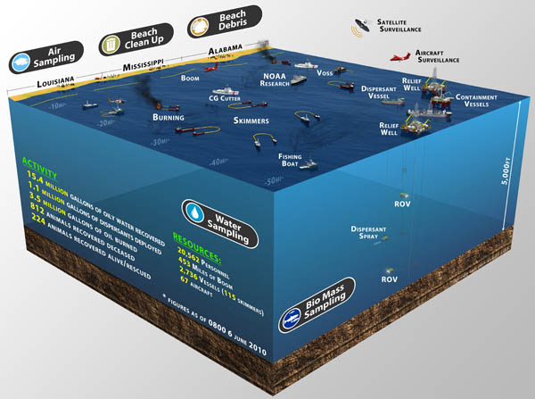
</div>
</div>

<div class="posted">
<br />Posted by <span class="item-creator">Kurt</span>
| <a class="link" href="2010-06.html#e2010-06-08T21_29_56.txt">Permalink</a>

<!-- <br /><a href="archives/2010-06-10T17_51_07.html#comments">Comments</a> -->
</div>
</div>
<div class="item">
<a id="e2010-06-08T16_38_51.txt" name="e2010-06-08T16_38_51.txt"></a>
<h2 class="date">06.08.2010 16:38</h2>
<div class="blogbody">
<h3 class="title">Hans and the MBARI AUV working on the Deepwater Horizon</h3>
<div class="item-description">
<object id="otvPlayer" width="400" height="268">
<param name="movie" value="http://cdn.abclocal.go.com/static/flash/embeddedPlayer/swf/otvEmLoader.swf?version=&station=kgo&section=&mediaId=7484279&cdnRoot=http://cdn.abclocal.go.com&webRoot=http://abclocal.go.com&site=" ></param>
<param name="allowScriptAccess" value="always"></param>
<param name="allowNetworking" value="all"></param>
<param name="allowFullScreen" value="true"></param>
<embed id="otvPlayer" width="400" height="268" type="application/x-shockwave-flash" 
	allowscriptaccess="always" allownetworking="all" allowfullscreen="true" 
	src="http://cdn.abclocal.go.com/static/flash/embeddedPlayer/swf/otvEmLoader.swf?version=&station=kgo&section=&mediaId=7484279&cdnRoot=http://cdn.abclocal.go.com&webRoot=http://abclocal.go.com&site=">
</embed>
</object>
<br /><br />
<a href="http://abclocal.go.com/kgo/story?section=news%2Ftechnology&id=7483867">Aquarium team helps with oil spill analysis</a>
</div>
</div>

<div class="posted">
<br />Posted by <span class="item-creator">Kurt</span>
| <a class="link" href="2010-06.html#e2010-06-08T16_38_51.txt">Permalink</a>

<!-- <br /><a href="archives/2010-06-08T21_29_56.html#comments">Comments</a> -->
</div>
</div>
<div class="item">
<a id="e2010-06-08T07_50_54.txt" name="e2010-06-08T07_50_54.txt"></a>
<h2 class="date">06.08.2010 07:50</h2>
<div class="blogbody">
<h3 class="title">Norfolk, VA</h3>
<div class="item-description">
Today and tomorrow, I am in Norfolk for the MTS TechSurge meeting:
Ocean Observing: Thinking Outside the Basin, where I will be talking
about how work at NASA relates to ocean observing.  The view coming in
on the plane last night was really nice.  Working with AIS,
bathymetry, and lidar data from this area for the last four years
makes flying in to this area especially interesting.  
<br /><br />

<br /><br />

<br /><br />

</div>
</div>

<div class="posted">
<br />Posted by <span class="item-creator">Kurt</span>
| <a class="link" href="2010-06.html#e2010-06-08T07_50_54.txt">Permalink</a>

<!-- <br /><a href="archives/2010-06-08T16_38_51.html#comments">Comments</a> -->
</div>
</div>
<div class="item">
<a id="e2010-06-07T10_15_11.txt" name="e2010-06-07T10_15_11.txt"></a>
<h2 class="date">06.07.2010 10:15</h2>
<div class="blogbody">
<h3 class="title">Deepwater Horizon LMRP Cap installation</h3>
<div class="item-description">
<object width="640" height="385"><param name="movie" value="http://www.youtube.com/v/-rUwM62JC4g&hl=en_US&fs=1&color1=0x5d1719&color2=0xcd311b"></param><param name="allowFullScreen" value="true"></param><param name="allowscriptaccess" value="always"></param><embed src="http://www.youtube.com/v/-rUwM62JC4g&hl=en_US&fs=1&color1=0x5d1719&color2=0xcd311b" type="application/x-shockwave-flash" allowscriptaccess="always" allowfullscreen="true" width="640" height="385"></embed></object>
</div>
</div>

<div class="posted">
<br />Posted by <span class="item-creator">Kurt</span>
| <a class="link" href="2010-06.html#e2010-06-07T10_15_11.txt">Permalink</a>

<!-- <br /><a href="archives/2010-06-08T07_50_54.html#comments">Comments</a> -->
</div>
</div>
<div class="item">
<a id="e2010-06-05T13_43_57.txt" name="e2010-06-05T13_43_57.txt"></a>
<h2 class="date">06.05.2010 13:43</h2>
<div class="blogbody">
<h3 class="title">Movie of the BAG visualization in Google Earth</h3>
<div class="item-description">
Just yesterday, I put all the pieces together for my current version
of my <a href="http://www.opennavsurf.org/">BAG</a> visualization.
This is my 2nd iteration of displaying NOAA Hydrographic Survey Grids
in the BAG format in Google Earth. I first scraped NGDC for all
released BAGs. Then I ran a python program that scraped the metadata
from all 2000 BAGs and produces an SQLite database. From there, I
produce bounding boxes and summary placemarks in a python program. I
then use a bash script to create depth histograms, XML metadata
extracted from the BAG, and KML tiled display. The script makes heavy
use of <a href="http://www.gdal.org/">gdal</a> and <a href="http://www.imagemagick.org/">imagemagick</a>.  The code is definitely ugly, but I really like the
resulting visualization.
<br /><br />
<object width="640" height="385"><param name="movie" value="http://www.youtube.com/v/7fOTlqqQ5O4&hl=en_US&fs=1&color1=0x006699&color2=0x54abd6"></param><param name="allowFullScreen" value="true"></param><param name="allowscriptaccess" value="always"></param><embed src="http://www.youtube.com/v/7fOTlqqQ5O4&hl=en_US&fs=1&color1=0x006699&color2=0x54abd6" type="application/x-shockwave-flash" allowscriptaccess="always" allowfullscreen="true" width="640" height="385"></embed></object>
</div>
</div>

<div class="posted">
<br />Posted by <span class="item-creator">Kurt</span>
| <a class="link" href="2010-06.html#e2010-06-05T13_43_57.txt">Permalink</a>

<!-- <br /><a href="archives/2010-06-07T10_15_11.html#comments">Comments</a> -->
</div>
</div>
<div class="item">
<a id="e2010-06-05T12_21_47.txt" name="e2010-06-05T12_21_47.txt"></a>
<h2 class="date">06.05.2010 12:21</h2>
<div class="blogbody">
<h3 class="title">Shep Smith on NPR</h3>
<div class="item-description">
Shep Smith, a CCOM alumni, was just on <a href="http://www.npr.org/">NPR</a>: <a href="http://www.loe.org/shows/segments.htm?programID=10-P13-00023&segmentID=1">Slick Technology</a>.  Shep talks about using a Moving Vessel Profiler (MVP).
<br /><br />
<script language="JavaScript" src="../attachments/audio/audio-player.js"></script>
<object type="application/x-shockwave-flash" data="../attachments/audio/player.swf" id="audioplayer1" height="24" width="290">
<param name="movie" value="../attachments/audio/player.swf">
<param name="FlashVars" value="playerID=audioplayer1&soundFile=http://stream.loe.org/audio/100604/100604noaa.mp3">
<param name="quality" value="high">
<param name="menu" value="false">
<param name="wmode" value="transparent">
</object> 
<br /><br />
BTW, I found <a href="http://wpaudioplayer.com/">AudioPlayer</a> from <a href="http://www.mikemusic.com/home.php?go=game-music">Mike Shapiro's samples page</a>.
</div>
</div>

<div class="posted">
<br />Posted by <span class="item-creator">Kurt</span>
| <a class="link" href="2010-06.html#e2010-06-05T12_21_47.txt">Permalink</a>

<!-- <br /><a href="archives/2010-06-05T13_43_57.html#comments">Comments</a> -->
</div>
</div>
<div class="item">
<a id="e2010-06-04T14_10_43.txt" name="e2010-06-04T14_10_43.txt"></a>
<h2 class="date">06.04.2010 14:10</h2>
<div class="blogbody">
<h3 class="title">Which C++ logging and unit test framework(s)?</h3>
<div class="item-description">
<a href="http://schwehr.blogspot.com/2010/06/which-c-logging-and-unit-test-framework.html">Please comment here!</a>
<br /><br />
Back a few years ago, I wrote <a
href="http://freshmeat.net/projects/slogcxx">slogcxx</a> as an
experiment in creating and easy to use logging system.  It spent a
little under a year as the logging system for GeoZui.  I haven't
touched the code in a long time and I am sure it can be done better.
So, I have two questions that were triggered by a discussion with BRC.
What packages would you suggest for C++ logging and unit testing.  I
did not including anything real in <a
href="http://vislab-ccom.unh.edu/~schwehr/software/libais/">libais</a>
and would really like to work towards the best possible infrastructure
to make this a long lived package.  Some basic thoughts on
requirements:
<ul>
  <li>Must not be GPL, but LGPL is okay.  It has to play nice</li>
  <li>Be open source</li>
  <li>Must be thread safe - a unit test may fire off a bunch of threads for a test</li>
  <li>The logger must be able to handle multiple producers and consumers that are both in the same process and external</li>
  <li>Likely to stick around for a few years</li>
  <li>Relatively easy to use</li>
  <li>Cross platform to Windows, Mac, and Linux</li>
  <li>If not already available in fink, rpm, and deb form, then easily packaged</li>
  <li>Have a safe for work project name... <a href="http://freshmeat.net/projects/testicle">ahem</a></li>
</ul>
Just looking on Freshmeat, there are a lot of projects out there and
slogcxx is in the pile still: <a
href="http://freshmeat.net/search?page=1&q=logging&with=191&without=93">C++
logging</a> and <a
href="http://freshmeat.net/search?page=1&q=unit+test&submit=Search&with=191&without=2751%2C2772">C++
unit testing</a>. The thought is often to look at Boost (e.g. <a
href="http://torjo.com/log2/index.html">Boost Logging Lib v2</a> and
<a
href="http://www.boost.org/doc/libs/1_43_0/libs/test/doc/html/index.html">Boost
test</a>) because of the incredible peer review, but it is a pretty
heavy dependency.
<br /><br />
There are just so many options.  Building a large system on the wrong
one will lead to serious pain, but using a good one will encourage
better software.
<br /><br />
Dreaming of being able to subscribe to an <a
href="http://www.amqp.org">AMQP</a> feed for a cluster and user
interface tearing through massive data crunching and knowing that the
system passed a slew of unit tests that give us confidence that new
code is less likely to pull the system down...
<br /><br />
Another source of info: Wikipedia <a
href="http://en.wikipedia.org/wiki/List_of_unit_testing_frameworks#C.2B.2B">List
of unit testing frameworks</a>.  There doesn't seem to be an
equivalent page for loggers, but there is a little in the Java lib4j
<a href="http://en.wikipedia.org/wiki/Log4j#Ports">ports section</a>.
<br /><br />
P.S. I'm really starting to think that GNU <a
href="http://www.gnu.org/software/autoconf/">autoconf</a> sucks.  It
may be the standard, but a configure system is supposed to help, not
break my brain.  It shouldn't require massive training and
experimentation to get it into place.  I really should go look at <a
href="http://www.cmake.org/">cmake</a> and <a
href="www.scons.org">scons</a> again.
</div>
</div>

<div class="posted">
<br />Posted by <span class="item-creator">Kurt</span>
| <a class="link" href="2010-06.html#e2010-06-04T14_10_43.txt">Permalink</a>

<!-- <br /><a href="archives/2010-06-05T12_21_47.html#comments">Comments</a> -->
</div>
</div>
<div class="item">
<a id="e2010-06-04T11_13_11.txt" name="e2010-06-04T11_13_11.txt"></a>
<h2 class="date">06.04.2010 11:13</h2>
<div class="blogbody">
<h3 class="title">Timemachine failures</h3>
<div class="item-description">
I have had this happen a couple times in the last week.  Backups
shouldn't fail.  Skipping a file you can't handle and issuing warnings
is okay, but crashing is not okay.  It always seems to work if I restart
the backup right after the crash.  Here is the report in /var/log/system.log
<pre>Jun  4 10:50:58 laptop com.apple.backupd[44540]: Starting standard backup
Jun  4 10:50:59 laptop com.apple.backupd[44540]: Backing up to: /Volumes/Time Machine Backups/B
ackups.backupdb
Jun  4 10:51:58 laptop Jun  4 10:52:46 laptop com.apple.backupd[44540]: No pre-backup thinning needed: 3.34 GB requested (including padding), 119.30 GB available
Jun  4 11:05:21 laptop com.apple.backupd[44540]: Indexing a file failed. 
  Returned 1 for: /Users/schwehr/projects/src/bag-py/processed/H11288/H11288_2m_2/16/16102/38310.kml, /Volumes/Time Machine Backups/Backups.backupdb/laptop/2010-06-04-105102.inProgress/A806AA65-8347-4607-8D64-8F4FCD263850/laptop/Users/schwehr/projects/src/bag-py/processed/H11288/H11288_2m_2/16/16102/38310.kml
Jun  4 11:05:21 laptop com.apple.backupd[44540]: Aborting backup because indexing a file failed.
Jun  4 11:05:21 laptop com.apple.backupd[44540]: Stopping backup.
Jun  4 11:05:22 laptop com.apple.launchd[1] (com.apple.metadata.mds[43819]): Job appears to have crashed: Segmentation fault
Jun  4 11:05:22 laptop com.apple.ReportCrash.Root[44601]: 2010-06-04 11:05:22.472 ReportCrash[44601:2803] Saved crash report for mds[43819] version ??? (???) to /Library/Logs/DiagnosticReports/mds_2010-06-04-110522_localhost.crash
Jun  4 11:05:23 laptop com.apple.backupd[44540]: Copied 63578 files (824.8 MB) from volume laptop.
Jun  4 11:05:23 laptop com.apple.backupd[44540]: Copy stage failed with error:11
Jun  4 11:05:31 laptop com.apple.backupd[44540]: Backup failed with error: 11</pre>
And the file it could not index was not being modified and is still sitting there on the disk doing nothing.
<br /><br />
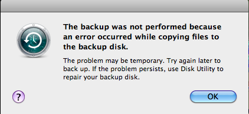
</div>
</div>

<div class="posted">
<br />Posted by <span class="item-creator">Kurt</span>
| <a class="link" href="2010-06.html#e2010-06-04T11_13_11.txt">Permalink</a>

<!-- <br /><a href="archives/2010-06-04T14_10_43.html#comments">Comments</a> -->
</div>
</div>
<div class="item">
<a id="e2010-06-03T14_48_48.txt" name="e2010-06-03T14_48_48.txt"></a>
<h2 class="date">06.03.2010 14:48</h2>
<div class="blogbody">
<h3 class="title">Explore the bathymetry of the Gulf of Mexico</h3>
<div class="item-description">
We've put online a copy of the Gulf of Mexico section of the Coastal
Relief model in sd format.  You can fly around the area where
Deepwater Horizon spill is occurring.  If you don't have Fledermaus,
you can use the free browser: <a
href="http://ivs3d.com/download/iview3d_download.html">iView4D</a>.  I
leave it as an excercise for those with Fledermaus to create a color
map and shading that shows the area better and to add annotations of
the site.  For other ideas, take a look at the <a
href="http://vislab-ccom.unh.edu/~schwehr/LaJolla2004/">La Jolla demo</a>
that I did for the Scripps centenial celebration.
<br /><br />
<a href="http://vislab-ccom.unh.edu/~schwehr/GoogleEarth/GulfOfMexico-CoastalRelief.sd.zip">GulfOfMexico-CoastalRelief.sd.zip</a> [45MB]
<br /><br />
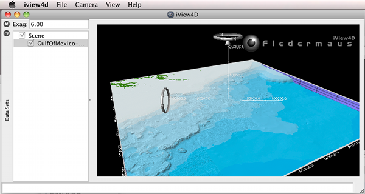
<br /><br />
My old La Jolla / SIO demo video.  Pardon the poor quality of this old video.
<br /><br />
<object width="480" height="385"><param name="movie" value="http://www.youtube.com/v/LfNEqnvVO1U&hl=en_US&fs=1&color1=0x006699&color2=0x54abd6"></param><param name="allowFullScreen" value="true"></param><param name="allowscriptaccess" value="always"></param><embed src="http://www.youtube.com/v/LfNEqnvVO1U&hl=en_US&fs=1&color1=0x006699&color2=0x54abd6" type="application/x-shockwave-flash" allowscriptaccess="always" allowfullscreen="true" width="480" height="385"></embed></object>
</div>
</div>

<div class="posted">
<br />Posted by <span class="item-creator">Kurt</span>
| <a class="link" href="2010-06.html#e2010-06-03T14_48_48.txt">Permalink</a>

<!-- <br /><a href="archives/2010-06-04T11_13_11.html#comments">Comments</a> -->
</div>
</div>
<div class="item">
<a id="e2010-06-03T09_03_19.txt" name="e2010-06-03T09_03_19.txt"></a>
<h2 class="date">06.03.2010 09:03</h2>
<div class="blogbody">
<h3 class="title">Example BAG in Google Earth with Transparency</h3>
<div class="item-description">
My new desktop is working hard to push through all 2000 BAGs with the
new python code using gdal's interface to produce transparent
hillshades.  Here is an example that shows off the transparency
nicely.
<br /><br />
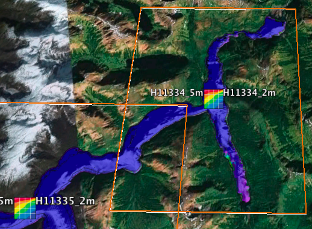
<br /><br />
Here is what it looked like before with the semi-transparent gray
bounding box.  Note that I've fixed the color map to match the more
common blue as deep color scheme.
<br /><br />

</div>
</div>

<div class="posted">
<br />Posted by <span class="item-creator">Kurt</span>
| <a class="link" href="2010-06.html#e2010-06-03T09_03_19.txt">Permalink</a>

<!-- <br /><a href="archives/2010-06-03T14_48_48.html#comments">Comments</a> -->
</div>
</div>
<div class="item">
<a id="e2010-06-03T07_26_09.txt" name="e2010-06-03T07_26_09.txt"></a>
<h2 class="date">06.03.2010 07:26</h2>
<div class="blogbody">
<h3 class="title">Deepwater Horizon LMRP cap</h3>
<div class="item-description">
These videos are a chance to see deep water operations done with ROVs.
I remember trying to pick up rocks from the bottom of Mono Lake with
the NASA TROV back in the mid 1990's.  After more than a half hour of
frustrating mis-steps and no samples, I switched strategies and just
pushed the whole sample basket into the sediment and came back with a
basked full of rocks.
<br /><br />
<object width="640" height="505"><param name="movie" value="http://www.youtube.com/v/DaaCl4cNKjY&hl=en_US&fs=1&rel=0&color1=0x006699&color2=0x54abd6"></param><param name="allowFullScreen" value="true"></param><param name="allowscriptaccess" value="always"></param><embed src="http://www.youtube.com/v/DaaCl4cNKjY&hl=en_US&fs=1&rel=0&color1=0x006699&color2=0x54abd6" type="application/x-shockwave-flash" allowscriptaccess="always" allowfullscreen="true" width="640" height="505"></embed></object>
<br /><br />
<object width="640" height="505"><param name="movie" value="http://www.youtube.com/v/UfrRaSbIL2E&hl=en_US&fs=1&rel=0&color1=0x006699&color2=0x54abd6"></param><param name="allowFullScreen" value="true"></param><param name="allowscriptaccess" value="always"></param><embed src="http://www.youtube.com/v/UfrRaSbIL2E&hl=en_US&fs=1&rel=0&color1=0x006699&color2=0x54abd6" type="application/x-shockwave-flash" allowscriptaccess="always" allowfullscreen="true" width="640" height="505"></embed></object>
<br /><br />
<object width="640" height="505"><param name="movie" value="http://www.youtube.com/v/e_qfLypiENE&hl=en_US&fs=1&rel=0&color1=0x006699&color2=0x54abd6"></param><param name="allowFullScreen" value="true"></param><param name="allowscriptaccess" value="always"></param><embed src="http://www.youtube.com/v/e_qfLypiENE&hl=en_US&fs=1&rel=0&color1=0x006699&color2=0x54abd6" type="application/x-shockwave-flash" allowscriptaccess="always" allowfullscreen="true" width="640" height="505"></embed></object>
<br /><br />
<object width="640" height="505"><param name="movie" value="http://www.youtube.com/v/a5pc7um4Io8&hl=en_US&fs=1&rel=0&color1=0x006699&color2=0x54abd6"></param><param name="allowFullScreen" value="true"></param><param name="allowscriptaccess" value="always"></param><embed src="http://www.youtube.com/v/a5pc7um4Io8&hl=en_US&fs=1&rel=0&color1=0x006699&color2=0x54abd6" type="application/x-shockwave-flash" allowscriptaccess="always" allowfullscreen="true" width="640" height="505"></embed></object>
</div>
</div>

<div class="posted">
<br />Posted by <span class="item-creator">Kurt</span>
| <a class="link" href="2010-06.html#e2010-06-03T07_26_09.txt">Permalink</a>

<!-- <br /><a href="archives/2010-06-03T09_03_19.html#comments">Comments</a> -->
</div>
</div>
<div class="item">
<a id="e2010-06-02T12_01_10.txt" name="e2010-06-02T12_01_10.txt"></a>
<h2 class="date">06.02.2010 12:01</h2>
<div class="blogbody">
<h3 class="title">NOAA needs a public software interface specification for multibeam data</h3>
<div class="item-description">
Comments can go here: <a href="http://schwehr.blogspot.com/2010/06/bag-file-naming-convention.html">BAG file naming convention</a>
<br /><br />
Next week, I will be talking in Norfolk about technology transfer
between NASA And NOAA.  One thing that is clear, we need a file naming
convention for published data files that come out of NOAA.  These
things are not fun, but they make or break the long term usability of
data.  When I join a NASA mission, the first few times I try to use
these filename, it is a bit confusing, but once you lookup the codes
and start to use them, you realize the power of well controlled file
names.  The naming convention for NOAA BAGs is great that it has a
survey name, but the rest of the filename is basically information.
It's done differently and there is no reference in the metadata to the
standard applied.  To kick off this idea, let us first think about just
BAGs.  What should be in the filename and how can we code it?
<br /><br />
Take a look through the Mars Exploration Rover (MER) Software Interface Specification (SIS): <a href="http://pds-imaging.jpl.nasa.gov/documentation/MER_camsis_v4_9-25-07.pdf">MER_camsis_v4_9-25-07.pdf</a> [JPL]
<br /><br />
First, take a look at the Data Processing Level.  With multibeam and
lidar data, we have the similar kinds of concepts, but the data
usually starts off collected with an IMU providing GPS derived
positioning (not something we have on Mars at the moment).
<br /><br />
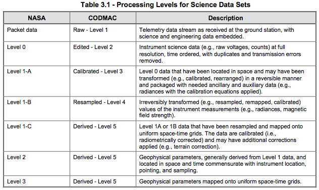
<br /><br />
Now for the part that I really want you to take a look at: Section
4.4, File Naming, P22.  The file names are broken into a whole bunch
of fields:
<pre>&lt;scid&gt;&lt;inst&gt;&lt;sclk&gt;&lt;prod&gt;&lt;site&gt;&lt;pos&gt;&lt;seq&gt;&lt;eye&gt;&lt;filt&gt;&lt;who&gt;&lt;ver&gt;&lt;ext&gt;</pre>
Each of these fields is defined in the document.  For BAG instrument
type, I could see codes something like this: <b>S</b> = <b>S</b>ingle
beam sonar <b>M</b> = <B>M</b>ultibeam, <b>l</b> = topo <b>l</b>idar,
<b>L</b> = bathy <b>L</b>idar, <b>G</b> = predicted from
<b>G</b>ravity, <b>c</b> = <b>c</b>ombined sensors, <b>C</b> = lead
line or similar from a <b>C</b>able, etc.  Then when I had a BAG that
was from a bathy lidar, I would not be surprise when I opened it and
it did not look like multibeam sonar data.  There was no need to look
at the metadata (which would not have told me) or the
non-machine-readable Descriptive Reports.
<br /><br />
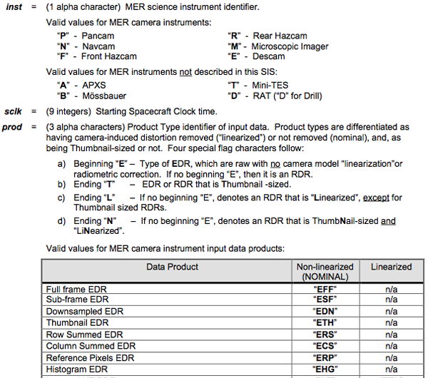
<br /><br />
The document has some examples of decoding image file names:
<br /><br />
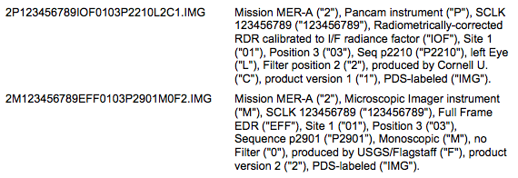
<br /><br />
These kinds of conventions are really powerful, but they do take a
while to create and debug.  I've spent hundreds of hours working on
spacecraft imaging teams making sure that everything in the SIS
document is correct.  
</div>
</div>

<div class="posted">
<br />Posted by <span class="item-creator">Kurt</span>
| <a class="link" href="2010-06.html#e2010-06-02T12_01_10.txt">Permalink</a>

<!-- <br /><a href="archives/2010-06-03T07_26_09.html#comments">Comments</a> -->
</div>
</div>
<div class="item">
<a id="e2010-06-02T11_25_47.txt" name="e2010-06-02T11_25_47.txt"></a>
<h2 class="date">06.02.2010 11:25</h2>
<div class="blogbody">
<h3 class="title">ERMA public as geoplatform.gov</h3>
<div class="item-description">
Now that it is public, I can post about this...
<br /><br />
<a href="http://seattletimes.nwsource.com/html/nationworld/2012006707_noaa02m.html">Seattle NOAA staff taking the spill to the Web</a> [Seattle Times]
<pre>...
A version of <a href="http://GeoPlatform.gov/">GeoPlatform.gov</a> is being tested. The official version
will be unveiled next week, said Amy Merten, chief of the spatial data
team at NOAA's Seattle-based Emergency Response Division.
<!-- -->
The site isn't ready for prime time, Merten cautioned. When it is, it
will show the path the oil slick is likely to follow, share zoomable
satellite images and provide data on biologically sensitive areas at
risk, she told U.S. Sen. Patty Murray during a briefing Tuesday on
NOAA's local oil-spill efforts.
...</pre>
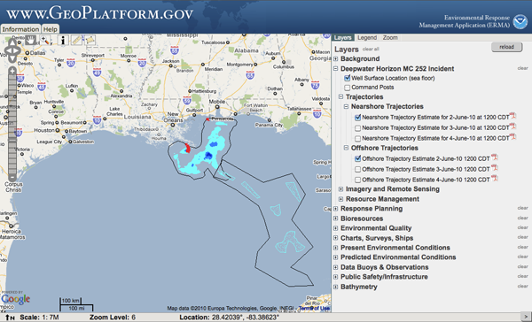
<br /><br />
<a href="http://www.miamiherald.com/2010/06/02/1658966/noaa-ship-to-study-underwater.html">NOAA ship to study underwater oil near site of leak</a> - The Thomas Jefferson:
<pre>...
"It's totally new. We're really testing the feasibility of the
approach, we don't know whether it will work or not, but it's
certainly worth trying," said one of those researchers, Larry Mayer,
director of the Center for Coastal and Ocean Mapping at the University
of New Hampshire. "What is the nature of submerged oil, if there is
oil? We just don't understand its properties yet."
...</pre>
</div>
</div>

<div class="posted">
<br />Posted by <span class="item-creator">Kurt</span>
| <a class="link" href="2010-06.html#e2010-06-02T11_25_47.txt">Permalink</a>

<!-- <br /><a href="archives/2010-06-02T12_01_10.html#comments">Comments</a> -->
</div>
</div>
<div class="item">
<a id="e2010-06-02T09_16_58.txt" name="e2010-06-02T09_16_58.txt"></a>
<h2 class="date">06.02.2010 09:16</h2>
<div class="blogbody">
<h3 class="title">Bash being used for Mars landers</h3>
<div class="item-description">
This is where I kick myself for not writing a journal paper describing
the Mars Polar Lander (MPL) integration system that I wrote in the
fall of 1999 so that Doug could cite me in his JGR paper.
<a href="http://trs-new.jpl.nasa.gov/dspace/bitstream/2014/40376/1/05-3465.pdf">Processing of Mars Exploration Rover imagery for science and operations planning</a>, JGR 2006, by Alexander et al.
<pre>...
The pipeline's glueware was developed as a script roughly 10,000 lines
of code in length using the Unix Bourne shell [Kochan and Wood,
1998]. Development was driven by a few factors: (1) scripts are
generally more flexible and easier to maintain than low level C++
code, (2) the MER GDS provided a Unix-based environment that supported
the Sun-Solaris and Linux Red Hat oper- ating systems, making the
glueware script readily deploy- able on multiple systems, (3)
establishing Unix as the product generation system baseline, combined
with famil- iarity of Unix amongst operations team members, made the
design amenable to future integration of ancillary tools developed as
scripts during mission operations, and (4) <b>heritage brought from MPL,
where the product generation system was developed under the
Bourne-again shell (Bash)</b>, provided precedents in a few areas of the
pipeline design (such as driving processing events based on file
detection).
...</pre>
Emphasis is mine.
<br /><br />
I have <a
href="http://vislab-ccom.unh.edu/~schwehr/papers/MarsPolarLander/doc/james.txt">james.txt</a>
and the scripts are in <a
href="http://vislab-ccom.unh.edu/~schwehr/papers/MarsPolarLander/bin/">MarsPolarLander/bin</a>,
but that is not the same as having a JGR paper. Sigh.
</div>
</div>

<div class="posted">
<br />Posted by <span class="item-creator">Kurt</span>
| <a class="link" href="2010-06.html#e2010-06-02T09_16_58.txt">Permalink</a>

<!-- <br /><a href="archives/2010-06-02T11_25_47.html#comments">Comments</a> -->
</div>
</div>
<div class="item">
<a id="e2010-06-01T13_59_41.txt" name="e2010-06-01T13_59_41.txt"></a>
<h2 class="date">06.01.2010 13:59</h2>
<div class="blogbody">
<h3 class="title">Making a gdaldem hillshade have proper transparency</h3>
<div class="item-description">
Note: If anyone can show me how to make a transparent hillshade using
gdal without having to resort to the python code below, I would really
appreciate hearing from you!
<br /><br />
Back in November/December of last year, I had trouble with
transparency in the output of gdaldem hillshade.  Thanks to help from
the IRC #gdal channel (and especially EvenR), I managed to get through
the whole process and I will try to document it here.  I definitely do
not understand why gdaldem color-relief works as expected (using some
extra flags) for alpha/transparency and gdaldem hillshade actually
writes 50% gray into areas with nodata.  EvenR suggested I add a
command like this to set the nodata value, but the results were either
a 50% gray (for -1 or 1e6) or the gray that matches the value.  I have
much to learn about gdal.
<pre><b>gdal_translate -a_nodata 0 H11296_5m-depths-f32.tif H11296_5m-depths-f32-with-nodata.tif</b></pre>
Here is the hillshade with the 50% gray that I do not want:
<br /><br />

<br /><br />
To help understand the problem, I will show gdalinfo commands (but
truncated to save space) as things progress.  Here is the original
bag:
<pre>gdalinfo H11296_5m.bag
Driver: BAG/Bathymetry Attributed Grid
...
PROJCS["UTM Zone 19, Northern Hemisphere",
...
Pixel Size = (5.001271523178817,-5.002456140350830)
...
Band 1 Block=3021x1 Type=Float32, ColorInterp=Undefined
  Description = elevation
  Min=-25.697 Max=2.399 
  NoData Value=1000000
Band 2 Block=3021x1 Type=Float32, ColorInterp=Undefined
  Description = uncertainty
  Min=0.500 Max=0.601 
  <b>NoData Value=0</b></pre>
So we are starting with a BAG.  The basic NOAA published bag has two
layers, which surprised a few people on IRC.  A bag could have just
one layer or it could have 3 or more.  The nice thing about HDF5 is
that you can put other information into a BAG when necessary.  (Which
is better: HDF5 or the latest NetCDF?)
<pre>gdalwarp -ot Float32 -t_srs EPSG:4326  $patch.bag ${patch}-depths-f32.tif</pre>
The first real step is to convert the BAG to a GeoTiff.  I am using a
32 bit floating point tif so I don't have to worry about the precision
of the data in the BAG.  Now that I realize GeoTiffs are not just for
images, things are better.  The geotiff:
<pre>gdalinfo H11296_5m-depths-f32.tif 
Driver: GTiff/GeoTIFF
Files: H11296_5m-depths-f32.tif
Size is 3205, 1278
Coordinate System is:
GEOGCS["WGS 84",
...
Band 1 Block=3205x1 Type=Float32, ColorInterp=Gray
Band 2 Block=3205x1 Type=Float32, ColorInterp=Undefined</pre>
Note that the nodata value that was in the BAG has been lost.  I
generate the hillshade from the GeoTiff of depths:
<pre><b>gdaldem hillshade ${patch}-depths-f32.tif $patch-hillshade.tif</b></pre>
This resulting image has a 1 pixel border of transparency, but the
internal cells without data are all 50% gray as shown above.
<pre>gdalinfo H11296_5m-hillshade.tif 
Driver: GTiff/GeoTIFF
...
Band 1 Block=3205x2 Type=Byte, ColorInterp=Gray
  NoData Value=0</pre>
Thankfully, the color-relief image has proper transparency, so the next idea I had was to copy the transparency.
<pre><b>gdaldem color-relief ${patch}-depths-f32.tif ../../color_ramp_fixed.dat  ${patch}-color-relief.tif -alpha -co ALPHA=YES</b>
<b>gdalinfo H11296_5m-color-relief.tif</b>
Driver: GTiff/GeoTIFF
...
Band 1 Block=3205x1 Type=Byte, ColorInterp=Red
  Mask Flags: PER_DATASET ALPHA 
Band 2 Block=3205x1 Type=Byte, ColorInterp=Green
  Mask Flags: PER_DATASET ALPHA 
Band 3 Block=3205x1 Type=Byte, ColorInterp=Blue
  Mask Flags: PER_DATASET ALPHA 
Band 4 Block=3205x1 Type=Byte, ColorInterp=Alpha</pre>
The code below takes the gray values from the hillshade and the alpha
channel from the color-relief and combines them into a new RGB geotiff
based off the color-relief geotiff.  I copy the gray channel into all
three of the R, G, and B channels to make an overly large gray image
with the alpha/transparency the way I need it.  
<br /><br />
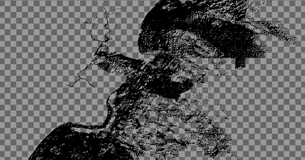
<br /><br />
I then combine the color-relief and the new transparent hillshade into
what I want: an image with hillshading and color:
<pre><b>composite -blend 50 $patch-hillshade-transparent.tif ${patch}-color-relief.tif ${patch}-blend.tif</b></pre>
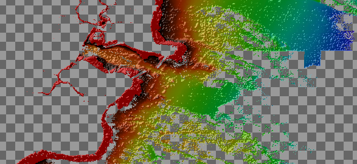
<br /><br />
That last step looses the georeferencing, so I have to go back in and add it in from an original that has knows where it is at:
<pre><b>listgeo -tfw ${patch}-depths-f32.tif
geotifcp -e ${patch}-depths-f32.tfw ${patch}-blend.tif ${patch}.tif</b></pre>
And the results in Google Earth:
<br /><br />
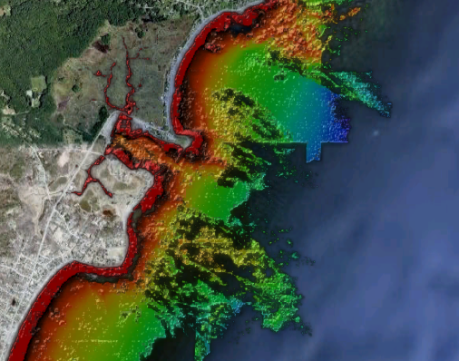
<br /><br />
My not yet polished python code that uses gdal to copy in transparency:
<pre><tt><i><font color="#9A1900">#!/usr/bin/env python</font></i>
<b><font color="#000080">from</font></b> __future__ <b><font color="#000080">import</font></b> print_function
<b><font color="#000080">import</font></b> sys
<b><font color="#000080">import</font></b> osgeo<font color="#990000">.</font>gdal as gdal
<b><font color="#000080">import</font></b> osgeo<font color="#990000">.</font>gdalconst
gdal<font color="#990000">.</font><b><font color="#000000">AllRegister</font></b><font color="#990000">()</font>
<!-- -->
patch_name <font color="#990000">=</font> <font color="#FF0000">'H11296_5m'</font>
hillshade <font color="#990000">=</font> gdal<font color="#990000">.</font><b><font color="#000000">Open</font></b><font color="#990000">(</font>patch_name <font color="#990000">+</font> <font color="#FF0000">'-hillshade.tif'</font><font color="#990000">,</font> gdal<font color="#990000">.</font>GA_ReadOnly<font color="#990000">)</font>
color <font color="#990000">=</font> gdal<font color="#990000">.</font><b><font color="#000000">Open</font></b><font color="#990000">(</font>patch_name <font color="#990000">+</font> <font color="#FF0000">'-color-relief.tif'</font><font color="#990000">,</font> gdal<font color="#990000">.</font>GA_ReadOnly<font color="#990000">)</font>
<!-- -->
w<font color="#990000">,</font>h <font color="#990000">=</font> color<font color="#990000">.</font>RasterXSize<font color="#990000">,</font>color<font color="#990000">.</font>RasterYSize
<b><font color="#0000FF">print</font></b> <font color="#990000">(</font><font color="#FF0000">'dim:'</font><font color="#990000">,</font>w<font color="#990000">,</font>h<font color="#990000">,</font><font color="#FF0000">'\t\t'</font><font color="#990000">,</font>hillshade<font color="#990000">.</font>RasterXSize<font color="#990000">,</font>hillshade<font color="#990000">.</font>RasterYSize<font color="#990000">)</font>
<!-- -->
driver <font color="#990000">=</font> gdal<font color="#990000">.</font><b><font color="#000000">GetDriverByName</font></b><font color="#990000">(</font><font color="#FF0000">'GTiff'</font><font color="#990000">)</font>
<b><font color="#0000FF">if</font></b> driver <b><font color="#0000FF">is</font></b> None<font color="#990000">:</font>
    <b><font color="#0000FF">print</font></b><font color="#990000">(</font><font color="#FF0000">'Format driver %s not found, pick a supported driver.'</font> <font color="#990000">%</font> format<font color="#990000">)</font>
    sys<font color="#990000">.</font><b><font color="#000000">exit</font></b><font color="#990000">(</font> <font color="#993399">1</font> <font color="#990000">)</font>
<!-- -->
dst <font color="#990000">=</font> driver<font color="#990000">.</font><b><font color="#000000">CreateCopy</font></b><font color="#990000">(</font> <font color="#FF0000">'dst.tif'</font><font color="#990000">,</font> color<font color="#990000">)</font> <i><font color="#9A1900">#, 0) # what was the zero for?</font></i>
<!-- -->
<b><font color="#0000FF">print</font></b> <font color="#990000">(</font><font color="#FF0000">'gdal.GCI_AlphaBand:'</font><font color="#990000">,</font> gdal<font color="#990000">.</font>GCI_AlphaBand<font color="#990000">)</font>
<!-- -->
<b><font color="#0000FF">for</font></b> band_num <b><font color="#0000FF">in</font></b> <b><font color="#000000">range</font></b><font color="#990000">(</font><font color="#993399">1</font><font color="#990000">,</font>color<font color="#990000">.</font>RasterCount<font color="#990000">+</font><font color="#993399">1</font><font color="#990000">):</font>
    band <font color="#990000">=</font> color<font color="#990000">.</font><b><font color="#000000">GetRasterBand</font></b><font color="#990000">(</font>band_num<font color="#990000">)</font>
    <b><font color="#0000FF">if</font></b> band <b><font color="#0000FF">is</font></b> None<font color="#990000">:</font>
        <b><font color="#0000FF">print</font></b> <font color="#990000">(</font><font color="#FF0000">'band is None'</font><font color="#990000">)</font>
        <b><font color="#0000FF">continue</font></b>
    bandmin<font color="#990000">,</font>bandmax <font color="#990000">=</font> band<font color="#990000">.</font><b><font color="#000000">ComputeRasterMinMax</font></b><font color="#990000">()</font>
    clr_interp <font color="#990000">=</font> band<font color="#990000">.</font><b><font color="#000000">GetColorInterpretation</font></b><font color="#990000">()</font>
    <b><font color="#0000FF">print</font></b> <font color="#990000">(</font>band_num<font color="#990000">,</font> bandmin<font color="#990000">,</font>bandmax<font color="#990000">,</font> clr_interp<font color="#990000">,</font> gdal<font color="#990000">.</font><b><font color="#000000">GetColorInterpretationName</font></b><font color="#990000">(</font>clr_interp<font color="#990000">))</font>
<!-- -->
alpha <font color="#990000">=</font> color<font color="#990000">.</font><b><font color="#000000">GetRasterBand</font></b><font color="#990000">(</font><font color="#993399">4</font><font color="#990000">)</font>
gray_band <font color="#990000">=</font> hillshade<font color="#990000">.</font><b><font color="#000000">GetRasterBand</font></b><font color="#990000">(</font><font color="#993399">1</font><font color="#990000">)</font>
<!-- -->
<i><font color="#9A1900"># Shove all the same gray values into all the color channels</font></i>
<b><font color="#0000FF">for</font></b> band_num <b><font color="#0000FF">in</font></b> <b><font color="#000000">range</font></b><font color="#990000">(</font><font color="#993399">1</font><font color="#990000">,</font><font color="#993399">4</font><font color="#990000">):</font>
    dst<font color="#990000">.</font><b><font color="#000000">GetRasterBand</font></b><font color="#990000">(</font>band_num<font color="#990000">).</font><b><font color="#000000">WriteArray</font></b><font color="#990000">(</font>gray_band<font color="#990000">.</font><b><font color="#000000">ReadAsArray</font></b><font color="#990000">())</font>
<!-- -->
<i><font color="#9A1900"># Set the alpha</font></i>
dst<font color="#990000">.</font><b><font color="#000000">GetRasterBand</font></b><font color="#990000">(</font><font color="#993399">4</font><font color="#990000">).</font><b><font color="#000000">WriteArray</font></b><font color="#990000">(</font>alpha<font color="#990000">.</font><b><font color="#000000">ReadAsArray</font></b><font color="#990000">())</font></tt></pre>
As an aside, this data set is actually an airborne bathymetric LIDAR
survey.  Unfortunately, nothing in the XML metadata says that this is
a lidar.  The only clue is in a textual description that hints that
this came from a plane.  You would have to go read the <a href="http://surveys.ngdc.noaa.gov/mgg/NOS/coast/H10001-H12000/H11296/DR/H11296.pdf">H11296 Descriptive Report</a> to know that it came from a "SHOALS-1000T Bathymetric and Topographic LiDAR."
<pre><tt><b><font color="#0000FF">&lt;abstract&gt;</font></b> 
Project: OPR-A321-KRL-05; Survey: H11296; State: New Hampshire;
General Locality: Approaches to Portsmouth; Sublocality: Rye Harbor
and Isle of Shoals; Date of Survey: 09/09/05-09/12/05; Surveyed by:
Beechcraft King Air 90; Verification by: Atlantic Hydrographic
Branch&amp;#xD;
<b><font color="#0000FF">&lt;/abstract&gt;</font></b></tt></pre>
</div>
</div>

<div class="posted">
<br />Posted by <span class="item-creator">Kurt</span>
| <a class="link" href="2010-06.html#e2010-06-01T13_59_41.txt">Permalink</a>

<!-- <br /><a href="archives/2010-06-02T09_16_58.html#comments">Comments</a> -->
</div>
</div>
<div class="item">
<a id="e2010-06-01T09_46_47.txt" name="e2010-06-01T09_46_47.txt"></a>
<h2 class="date">06.01.2010 09:46</h2>
<div class="blogbody">
<h3 class="title">Some peoples' desire to shutdown internet AIS</h3>
<div class="item-description">
I have discussed this in the past and even submitted comments to the
USCG request for input.  ESR has also posted a reply, <a href="http://esr.ibiblio.org/?p=2038">AIS "security" considered harmful</a> as we are having trouble
leaving comments on the articles web page. 
<br /><br />
Our Capt. Ben just sent me a copy of a Professional Mariner article: <a href="http://professionalmariner.com/ME2/dirmod.asp?sid=420C4D38DC9C4E3A903315CDDC65AD72&nm=Archives&type=Publishing&mod=Publications%3A%3AArticle&mid=8F3A7027421841978F18BE895F87F791&tier=4&id=2B7832406AF24786AA2069428247FEA0">Shut down unrestricted public Internet access to AIS data</a> by Kelly Sweeney.
<pre>Piracy off Somalia is at a six-year high and has increased in Asia in
the past year, with reports that hundreds of my fellow merchant
mariners are being held hostage for ransom. In these dangerous times,
every effort needs to be made to protect merchant ships, crews and the
billions of people living in port cities or coastal areas. The
authorities have mandated the use of AIS on thousands of commercial
vessels; they now need to ensure that this sensitive information does
not get into the wrong hands.</pre>
I have to say that this is closing the barn door after the horses have
left (and the barn has already burned down).  AIS is out
there... period.  If you block internet AIS, you will be damaging a good
resource for many people.
<br /><br />
If you are a bad guy, you will probably buy your own an AIS receiver
to remain anonymous.  You are only blocking the good guys from getting
AIS.  The only way to be secure your AIS is <b>turning off your AIS
transmitter</b>, which I might add is illegal for many ships.
Mariners designed this system.  They did not involve anyone with a
security mind set.  So, we have a system that is not secure.  It is
interesting to see the new dangerous cargo AIS binary message that is
broadcast in the clear.  But then the document defining the message
says that you have to protect the information once you receive it.
The bad guys already have it, so what is the point?  The military 
uses AIS, but they encrypt some of their possition messages.
<br /><br />
If you are transiting an area with pirates, a whole slew of issues
come up.  If you are insterest in this kind of topic, I recommend
reading a lot of what <a href="http://www.schneier.com/">Bruce
Schneier</a> has written.  Think very carefully about what you
believe.  Security is a very tricky thing.  It is easy to block 
the "good guys" while failing to deter "bad behavior".
<br /><br />
My biggest issue with AIS is the large number of bad AIS configurations.
Ask your budy or port authority to verify that you are showing up with
your MMSI and all your ship static data set right.
</div>
</div>

<div class="posted">
<br />Posted by <span class="item-creator">Kurt</span>
| <a class="link" href="2010-06.html#e2010-06-01T09_46_47.txt">Permalink</a>

<!-- <br /><a href="archives/2010-06-01T13_59_41.html#comments">Comments</a> -->
</div>
</div>
</div>

</div>

<div id="links">

<div class="calendar">
<table border="0" cellspacing="4" cellpadding="0" summary="Calendar with links to days with entries">
<caption class="calendarhead">June 2010</caption>
<tr>
<th align="center"><span class="calendarday">Su</span></th>
<th align="center"><span class="calendarday">Mo</span></th>
<th align="center"><span class="calendarday">Tu</span></th>
<th align="center"><span class="calendarday">We</span></th>
<th align="center"><span class="calendarday">Th</span></th>
<th align="center"><span class="calendarday">Fr</span></th>
<th align="center"><span class="calendarday">Sa</span></th>
</tr>
<tr>
<td align="center"></td> <td align="center"></td>          
<td align="center"><span class="calendar"><a href="2010-06.html#e2010-06-01T13_59_41.txt">1</a></span></td>
<td align="center"><span class="calendar"><a href="2010-06.html#e2010-06-02T12_01_10.txt">2</a></span></td>
<td align="center"><span class="calendar"><a href="2010-06.html#e2010-06-03T14_48_48.txt">3</a></span></td>
<td align="center"><span class="calendar"><a href="2010-06.html#e2010-06-04T14_10_43.txt">4</a></span></td>
<td align="center"><span class="calendar"><a href="2010-06.html#e2010-06-05T13_43_57.txt">5</a></span></td>
</tr>
<tr>
          
<td align="center"><span class="calendar">6</span></td>
<td align="center"><span class="calendar"><a href="2010-06.html#e2010-06-07T10_15_11.txt">7</a></span></td>
<td align="center"><span class="calendar"><a href="2010-06.html#e2010-06-08T21_29_56.txt">8</a></span></td>
<td align="center"><span class="calendar">9</span></td>
<td align="center"><span class="calendar"><a href="2010-06.html#e2010-06-10T17_51_07.txt">10</a></span></td>
<td align="center"><span class="calendar"><a href="2010-06.html#e2010-06-11T15_45_01.txt">11</a></span></td>
<td align="center"><span class="calendar">12</span></td>
</tr>
<tr>
      
<td align="center"><span class="calendar">13</span></td>
<td align="center"><span class="calendar"><a href="2010-06.html#e2010-06-14T16_42_13.txt">14</a></span></td>
<td align="center"><span class="calendar"><a href="2010-06.html#e2010-06-15T17_09_39.txt">15</a></span></td>
<td align="center"><span class="calendar">16</span></td>
<td align="center"><span class="calendar"><a href="2010-06.html#e2010-06-17T10_35_25.txt">17</a></span></td>
<td align="center"><span class="calendar">18</span></td>
<td align="center"><span class="calendar">19</span></td>
</tr>
<tr>
      
<td align="center"><span class="calendar">20</span></td>
<td align="center"><span class="calendar"><a href="2010-06.html#e2010-06-21T10_09_26.txt">21</a></span></td>
<td align="center"><span class="calendar">22</span></td>
<td align="center"><span class="calendar">23</span></td>
<td align="center"><span class="calendar">24</span></td>
<td align="center"><span class="calendar">25</span></td>
<td align="center"><span class="calendar">26</span></td>
</tr>
<tr>
   
<td align="center"><span class="calendar">27</span></td>
<td align="center"><span class="calendar">28</span></td>
<td align="center"><span class="calendar"><a href="2010-06.html#e2010-06-29T22_41_38.txt">29</a></span></td>
<td align="center"><span class="calendar">30</span></td>
</tr>
</table>
</div>

</div>

<br clear="all" />

</body>
</html>
